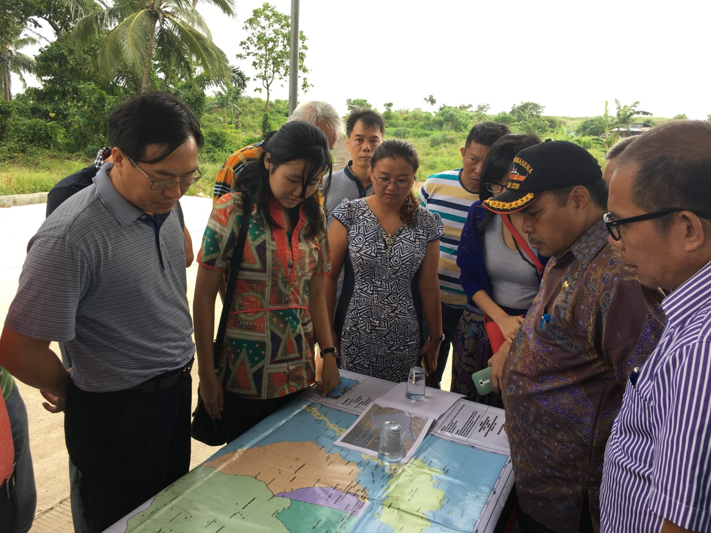
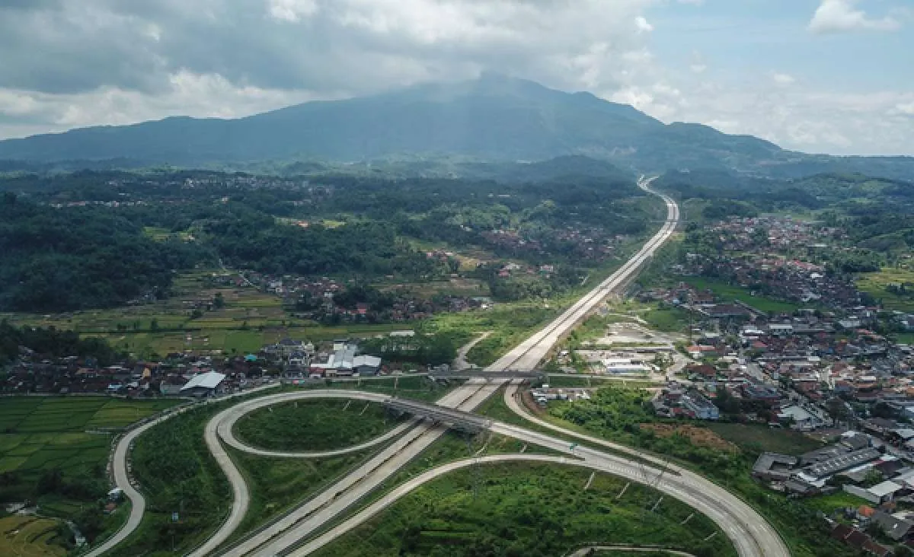
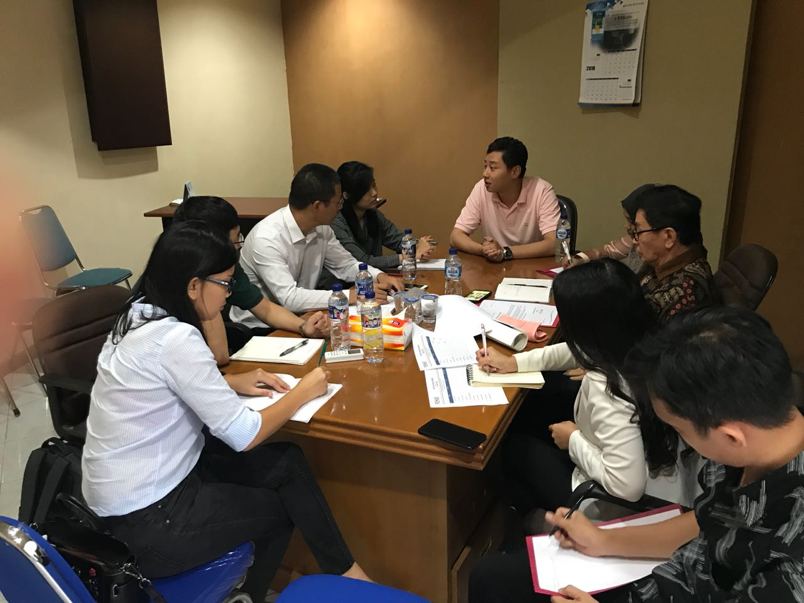
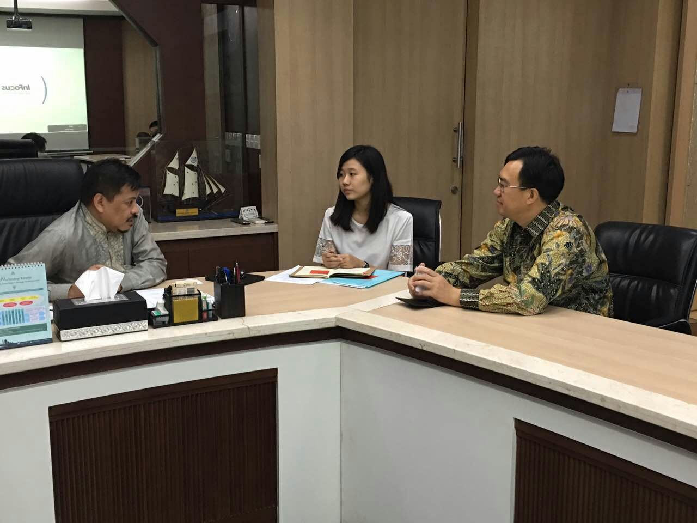
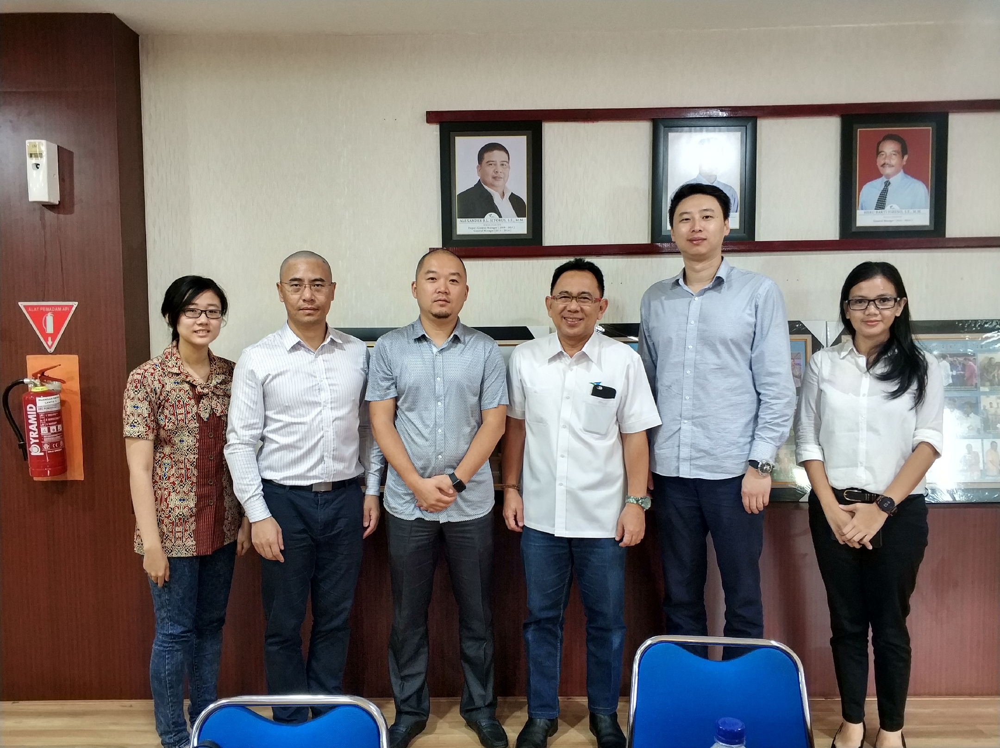
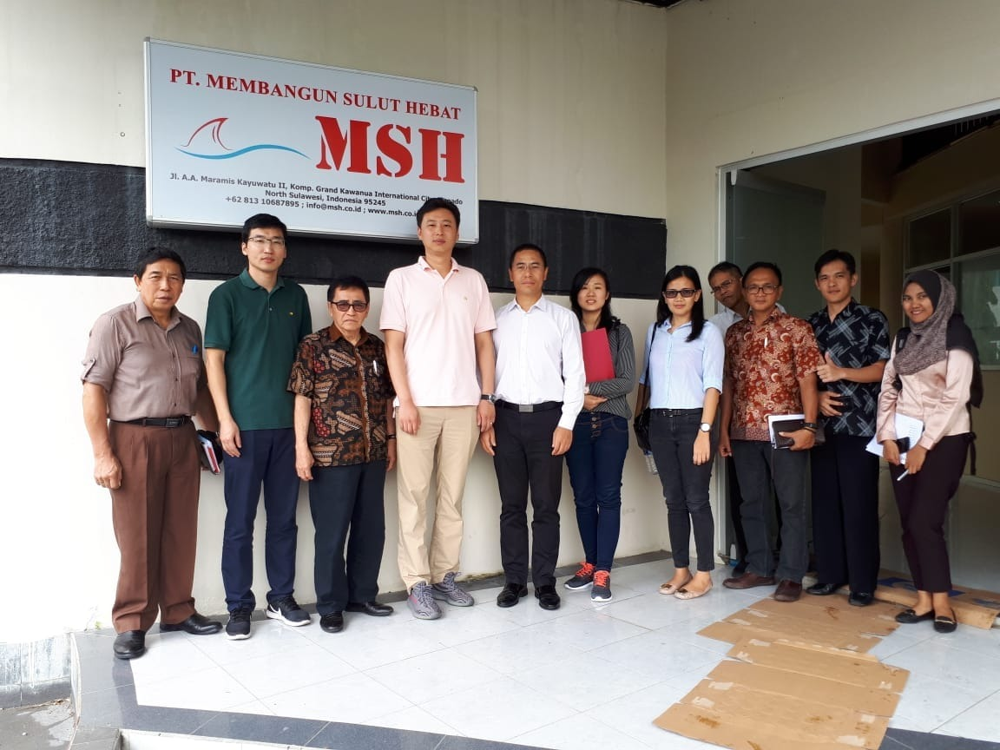
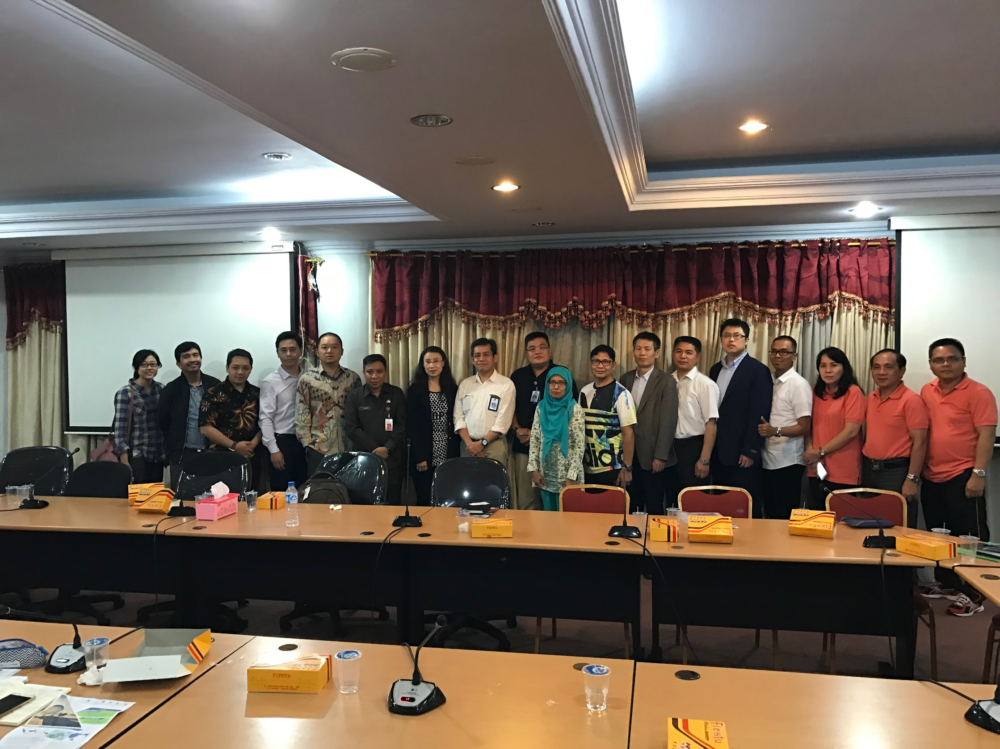
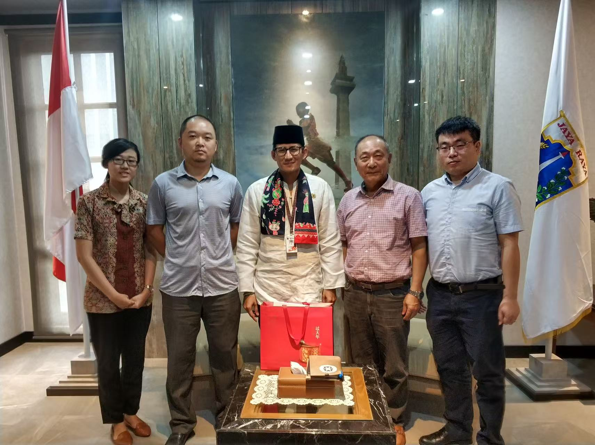
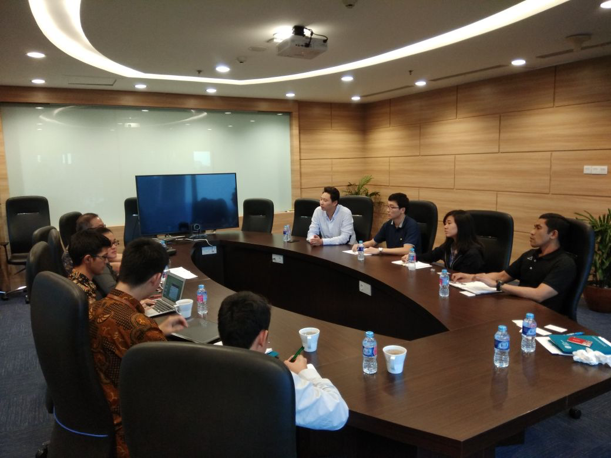

Investment and Legal Manager Assistant (2016-2020)
Assistant Investment and Legal Manager at China Road and Bridge (CRBC), supporting strategic national infrastructure and regional development projects.
Coordinated early-stage development of the Bitung Special Economic Zone (North Sulawesi), including MoU drafting, stakeholder discussions, and project planning.
Managed investment and legal coordination for 3 major strategic national projects, including Semarang–Demak Toll Road, Cisumdawu Section, and Solo–Kertosono Toll Road (Trans-Java Network).
Collaborated with central and local government agencies, SOEs, and engineering teams to align proposals with national infrastructure goals.

(1) Site visit by CRBC head office leadership to the Bitung SEZ to review project progress and development plans.

(2) Cisumdawu Toll Road Aerial View, one of the major infrastructure projects in Indonesia done by CRBC that I was involved in.

(3) Discussion between the China Road and Bridge Corporation (CRBC) team and PT MSH, the state-owned enterprise responsible for the Bitung Special Economic Zone, on development plans and Memorandum of Understanding (MoU) clauses.

(4) North Sulawesi Governor and CRBC leadership discussing the Bitung SEZ project and Port of Bitung collaboration.

(5) CRBC–PT Pelindo discussion on cooperation plans for the expansion of the Port of Bitung.

(6) CRBC–PT MSH group photo after finalizing MoU clauses.

(7) Tripartite discussion between CRBC, the North Sulawesi Provincial Government, and Indonesia’s Ministry of Tourism on potential cooperation for the Likupang Tourism SEZ.

(8) Meeting between the CRBC team and Mr. Sandiaga Uno, former Vice Governor of Jakarta, to explore potential collaboration on toll road development.

(9) Discussion between CRBC and PT MSH teams on feasibility assessment and development considerations for the Bitung Special Economic Zone.